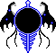

- Welcome to Touhou Wiki!
- Please register to edit. For assistance, check in with our Discord server or IRC channel.
Dark Mirror
| The title of this article is unofficial; an official name hasn't been found, so it's been given a fitting title by the editors of this wiki for amenity, either from a popular fan-name or a mere description of the topic. If an official name appears, then it should be moved to the official name. |
|
 Sprite of the midboss in Lotus Land Story
| |
| Species | |
|---|---|
| Location | |
Appearances | |
| Official Games | |
| |
This mirror-like being was found in the Fantasy World and is the third stage midboss of Lotus Land Story. After Reimu Hakurei or Marisa Kirisame passes some bakebake, the mirror will attack the player early, who'll shoot danmaku with different kinds of patterns. The mirror will move diagonally or side to side around the screen. It'll drop a 1-up if it's defeated. If not killed, it'll eventually fly off the screen downwards before the background fully changes to the "outer space" scenery. Since it's got no dialogue with the player, nothing is known about it.
Background Information[edit]
This mirror is nameless, but "Dark Mirror" (闇鏡 Yamikagami) seems to be a notable name in the Japanese community, but more notably is just referred to as "LLS 3rd Stage Midboss" (幻想郷三面中ボス). Due to it's looks however, some Western fans call this midboss the "Magic Mirror" or the "Magic Mirror Midboss", but due to the Spirit Mirror, it's better to refer to it as the "Magic Mirror (Demon)" or the "Magic Mirror Midboss (Demon)" to avoid confusion.
The sprite shows that it looks like a black mirror outlined in a crystal blue frame with a "tail" at the bottom with spikes curving out of it in the resemblance of a bony chest with what appears to be two black "strings" on both sides. The mirror has devil wings and a small antenna at the top. When it spins while moving, it appears to be completely flat. It somewhat appears similar to the Evil Eye.
Additional Information[edit]
- Its species could possibly be an Ungaikyo, a type of Tsukumogami, that are living mirrors that occasionally have occult powers. They are demons that come out of antique mirrors.
- It might actually have come from Mugenkan.
- It might have some relation to the Spirit Mirror of Mystic Square.
- It seems to be the flattest character in the whole series, being the size of only one pixel.
- In a broad sense, it is the first character to flip (i.e. not rotating like SinGyoku does).
Fandom[edit]
Official Sources[edit]
- 1998/08/14 Lotus Land Story – Stage 3
| This page is part of Project Characters, a Touhou Wiki project that aims to write proper descriptions for all official characters of Touhou Project. Please keep the character page guidelines in mind when contributing. |